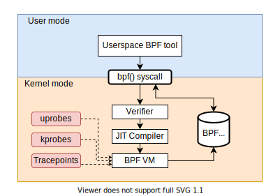
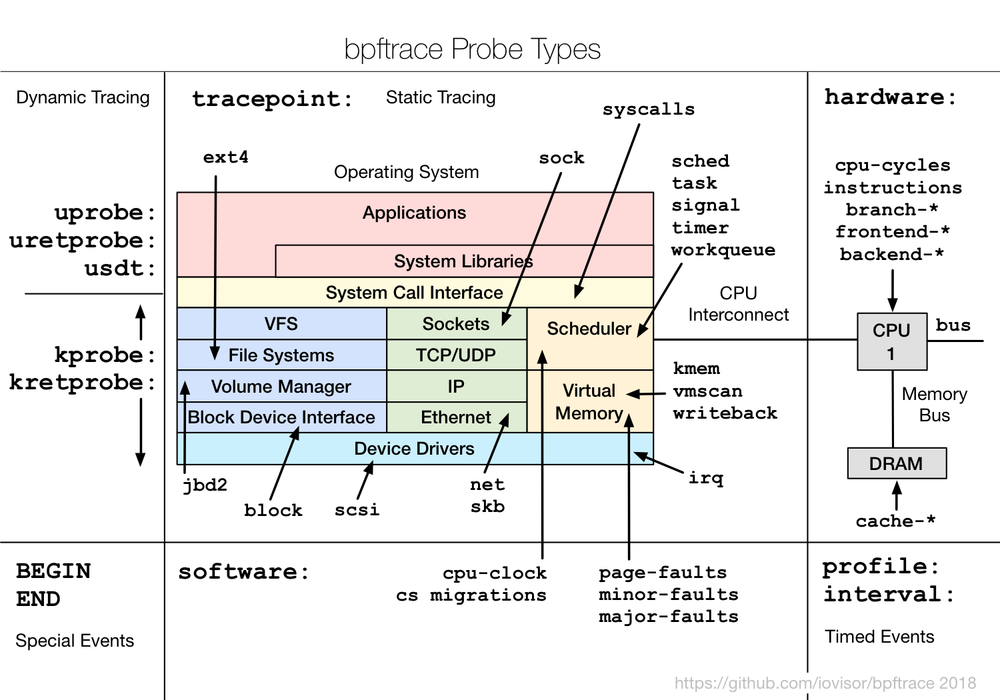

Profiling with BPFTrace
BPF
- Stands for Berkeley Packet Filter
- Initially used for Network Packet filtering
- Extended to become enhanced BPF (eBPF)
- Bytecode that executes on a VM inside the kernel
- Used for profiling, tracing, monitoring and packet filtering
- Allows us to observe the interaction of the kernel and user applications while running
BPF Programs
-
Has to be verified before execution
- Must terminate (Finite complexity)
- Limit on the bpf instruction count
- Should not use uninitialized variables
- etc..
- Triggerred by events (like tracepoints, kprobes, etc)
- Can communicate to userspace through BPF Maps
BPF Architecture
Advantages of BPF over other tracing tools
- Reduced number of context switches
- Overheads of monitoring is less
- No need to use kernel modules
- Netflix, Facebook use BPF programs in production
How to write BPF programs
-
BCC (BPF Compiler Collections)
- Allows embedding C-like code in Python, C++, etc
- Useful for creating full-fledged tools
- BPFTrace
- Libraries in Go, C++ and Rust
BPFtrace
- Useful for writing quick one liners that compiles to BPF
- BPFtrace programs have a syntax similar to C and Awk
- Unlike BCC, BPFtrace takes care of communication using BPF maps
BPFtrace Program Syntax
probe [, probe, ... ] / filter / { action }
Probes
- Events that trigger execution of BPF programs
-
Tracepoints
- Points in the kernel code
- Eg: Syscalls, exceptions, etc
sudo ls /sys/kernel/debug/tracing/events
-
kprobes and kretprobes
- Kernel functions
- Can be used to obtain the arguments passed
-
uprobes
- User defined probes in executables
-
sudo bpftrace -llists probes
Filter
- Allows us to filter out events
- Eg: Limit to syscalls of PID 2
Action
- Print messages using printf
- Count occurrences of events
- Show histogram of values
- Print stack traces
- Measure latency
Demo
Files used in the demonstration
Probes overview
Other BPF tools